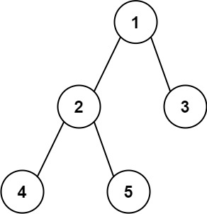

题面
给你一棵二叉树的根节点，返回该树的 直径 。
二叉树的 直径 是指树中任意两个节点之间最长路径的 长度 。这条路径可能经过也可能不经过根节点 root 。
两节点之间路径的 长度 由它们之间边数表示。
示例 1：

输入： root = [1,2,3,4,5]
输出： 3
解释： 3 ，取路径 [4,2,1,3] 或 [5,2,1,3] 的长度。示例 2：
输入： root = [1,2]
输出： 1提示：
- 树中节点数目在范围
[1, 104]内 -100 <= Node.val <= 100
思路
- 本题的
dfs函数本质就是 maxDepth，只是多了一行顺便更新全局最优。先回顾 maxDepth：
def maxDepth(root):
if not root:
return 0
left = maxDepth(root.left)
right = maxDepth(root.right)
return max(left, right) + 1
再看本题的 dfs：
```python
def dfs(root):
if not root:
return 0
l_len = dfs(root.left)
r_len = dfs(root.right)
self.ans = max(self.ans, l_len + r_len) # ← 只多了这一行
return max(l_len, r_len) + 1
```
两个函数的 `return` 完全一样，都是返回**深度**。直径就是在 maxDepth 的基础上，每个节点顺便算一下 `左 + 右` 是不是全局最长路径- 理解
l_len和r_len的含义：l_len = dfs(node.left)返回的是从当前 node 向左走，能走多少条边（包含 node→node.left 这条边） - 为什么 `self.ans = l_len + r_len` 不加 1，但 `return max(l_len, r_len) + 1` 要加 1？
- ans 不加 1：经过当前节点的最长路径 = 向左走的边数 + 向右走的边数。当前节点是拐点，不是一条边，所以不加 1
- return 加 1：这是返回给父节点用的——告诉父节点"从你到我还有一条边"，所以要 +1
- 简单记：+1 是给父节点加的那条"父→子"边，ans 是在自己这里左右合并，不涉及往上的边
- 这个函数同时干了两件事：
- 返回值：深度（给父节点用的，和 maxDepth 完全一样）
- 副作用：更新
self.ans（记录全局最长直径） - 两者是不同的东西！所以不能写
return dfs(root)——那返回的是深度，不是直径 - 为什么用
self.ans而不是普通变量ans？因为ans = max(ans, ...)是重新赋值，Python 会把ans当成新的局部变量报错。用self.ans是修改属性不是重新赋值，另一种方案是用nonlocal ans - 三道题递归模式的递进对比：
中序遍历 | 最大深度 | 二叉树直径 | |
|---|---|---|---|
返回值 | 无（None） | 有（深度） | 有（深度） |
副作用 | 有（往 ans 里 append） | 无 | 有（更新 self.ans） |
模式 | 纯副作用 | 纯返回值 | 返回值 + 副作用混合 |
**中序遍历（纯副作用）**：不需要子树返回任何东西，只管经过时收集值
```python
def dfs(node):
if not node: return
dfs(node.left)
ans.append(node.val) # 副作用：往外部列表塞值
dfs(node.right)
```
**最大深度（纯返回值）**：只需要子树返回深度，组合后返回给父节点
```python
def maxDepth(root):
if not root: return 0
left = maxDepth(root.left)
right = maxDepth(root.right)
return max(left, right) + 1 # 纯返回，无副作用
```
**二叉树直径（返回值 + 副作用混合）**：既要返回深度给父节点，又要顺便记录全局最优
```python
def dfs(root):
if not root: return 0
l_len = dfs(root.left)
r_len = dfs(root.right)
self.ans = max(self.ans, l_len + r_len) # 副作用：更新全局答案
return max(l_len, r_len) + 1 # 返回值：深度给父节点
```代码实现
class Solution:
def diameterOfBinaryTree(self, root: Optional[TreeNode]) -> int:
self.ans = 0
def dfs(root: Optional[TreeNode]):
if not root:
return 0
l_len = dfs(root.left)
r_len = dfs(root.right)
self.ans = max(self.ans, l_len + r_len)
return max(l_len, r_len) + 1
dfs(root)
return self.ans- 复杂度：时间 O(n)，空间 O(n)（递归调用栈）